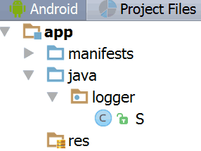

Too often, when we move from project to project, we find ourselves needing the same classes over and over. I used to solve this problem in new projects by simply copying code that gave me the functionality I needed from an older project.
However, inevitably, after I would copy a class, I would end up making small changes to it. After a while, I ended up having as many different versions of a class as I had different projects, and it got difficult to remember which project contained the most recent version of a class.
Centralized repositories solve the problem of code reuse. In this post, we are going to use JitPack.io, a public repository that allows you to make your code available to any Android project, on any computer, with just a few clicks.
Here we will explore a simple example: a logger that replaces the invocation of
Log.d(tag, msg) with a simpler invocation: S.l(msg).
We won’t, however, discuss implementing a universal logger - that is out of the scope of this post.
So, we have some code that we want to be able to access from a few different projects. Let’s get started:
- Create a GitHub account if you don’t already have one. For example, let’s say we named it MyName
- Create a project in Android Studio. No activity. Clear out the resources folder. Replace
AndroidManifest.xmlwith something along the lines of:
Rename the project folders as needed. An example project structure: <manifest package="logger"> <application /> </manifest> - Next, edit the project-level
build.gradleand add the following line to the «dependencies» section:buildscript { dependencies { ... classpath 'com.github.dcendents:android-maven-gradle-plugin:1.3' } } - In the module-level
build.gradleadd:
replacing MyName with your GitHub account name.apply plugin: 'com.github.dcendents.android-maven' group = 'com.github.MyName' - Don’t forget to change the android plugin from
applicationtolibraryand remove the applicationId. line. The final module-levelbuild.gradleshould look something like this:apply plugin: 'com.android.library' apply plugin: 'com.github.dcendents.android-maven' group = 'com.github.MyName' android { compileSdkVersion 24 buildToolsVersion "24.0.1" defaultConfig { minSdkVersion 8 targetSdkVersion 24 versionCode 1 versionName "1.0" } } - Next, create a GitHub repository. Let’s call it logger for example. Using whatever method you prefer, push the following files and directories to the repository
- the directory containing your class
AndroidManifest.xmlandbuild.gradle. In our case, this was: app - the
gradle/wrapperdirectory - the files:
build.gradle, gradlew, gradlew.bat, settings.gradle
- the directory containing your class
- After this, go to GitHub, click on «releases» and create a release. Assign a tag to it, for example: «1.0».
That’s it! Your module is published! All you need to do to use your module in any of your projects is to add the following lines:
- In the project-level
build.gradlefile:allprojects { repositories { ... maven {url "https://jitpack.io"} } } - Add the actual dependency to the module-level
build.gradlefile in the «dependencies». section. In our example, we will add the following:dependencies { ... compile 'com.github.MyName:logger:1.0' }
If there are any errors, you might want to check whether the module can even be installed in the first place, by running the gradlew install command from the local directory containing the gradlew file.
You can find a working example here: https://github.com/Rexee/s